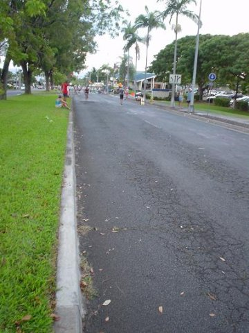

たった 42.2km
ほんの少しの安堵感
再び出発しよう
あとはランニングだけ
心残りのないよう思う存分
一歩一歩、進んでも進んでも
次のエイドステーションがこない。
次のマイルポストが見当たらない。
果たしていつになったら休めるのか。
体が痛くなったり、つらくなったり、
歩きたくなったり、リタイヤしたくなったり。
だけど、自分自身の足で進むしかない
たくさんのボランティアが支えてくれる
たくさんの人たちが声をからして応援してくれる
信じられないぐらいのたくさんの人たちから
勇気と元気を分けてもらっている
結果を出すのも自分だけ
リタイヤするのも自分だけ
だれにも頼ることはできない
だれのせいにもできない
まだまだ？
いや、もう少し。
楽しもうじゃないか！
just 42.2km
I take a breather for a short time.
I depart again
running
Although I take steps and more steps
I do not find the next milepost
I do not come to an aid station
I have some pain in my body
if I feel like walking
if I feel like giving up
I have only one way to direct my steps
Many volunteers help me
Many people cheer me
A great number of people
have made me courageous and happy
Where will the next aid station be?
Not yet?
Close?
Let's take heart.
“smile!”